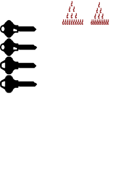

Browser-native parametric CAD for printable keys and plug followers: Python geometry, isolated worker execution, interactive 3D preview, and dual-format export—without an application server.
RealKey is a static, browser-hosted parametric CAD system. A user selects a lock family, profile, keyway, and bitting—or configures a plug follower—and the browser produces STL and STEP geometry locally. The repository’s defining idea is a common modeling contract with lock-specific implementations behind it.
Design proposition
Domain plug-ins
Ten key-family classes implement a shared Key contract. New lock systems extend the registry instead of adding parallel applications.
Local CAD execution
build123d runs inside a PyScript worker. Geometry settings and bitting stay in the browser unless the user shares a URL or downloads a model.
Responsive foreground
The main browser thread owns selectors, validation feedback, query state, and Three.js preview while heavy geometry runs off-thread.
Editable and printable output
Every successful production generation returns STEP for downstream CAD and STL for preview and common slicing workflows.
What the system is—and is not
It is a code-defined, asset-assisted generator for supported key and follower geometries.
It is a static web application: no project-owned account system, database, upload endpoint, or geometry server exists.
It is not a dimensional certification suite. Export success proves that CAD operations completed, not that a printed object will operate a physical lock.
It is not a universal decoder. Each family exposes only the profiles, keyways, bitting grammar, and transformations implemented in source.
Snapshot boundary
This dossier describes repository version 0.2.0 at commit 68595bb. It separates verified source facts from observed risks and recommendations. Revalidate counts, behavior, assets, and dependency assumptions whenever the codebase changes.
01
System context
RealKey is one web page containing two Python runtimes plus a JavaScript renderer. The foreground coordinates the experience; an isolated Web Worker owns the expensive CAD dependency chain and model exports.
Network policy, memory, virtual filesystem, downloads, clipboard, URL history
Physical print tolerances and lock behavior
02
Runtime lifecycle
Startup is staged so the foreground can remain small while the worker installs and imports the CAD environment. Generation then becomes an RPC-style request that returns encoded file payloads.
Cold start to first model
01
Browser
Parse static shell. Load CSS, PyScript core, Three.js import map, viewer module, foreground Python, and named worker declaration.
02
model_view.js
Gate WebGL2. Initialize scene, camera, renderer, lighting, orbit controls, and resize handling—or show a visible compatibility error.
03
worker.py
Install CAD stack. Bootstrap micropip packages and import build123d-backed generators inside the worker runtime.
04
main.py
Await readiness. Resolve workers['keygen'], pass the page base URL, and replace build123d imports in the foreground with mocks.
05
web_main.py
Construct tabs. Instantiate key and follower controllers, request registry metadata, build selectors, and attach DOM listeners.
06
Foreground
Hydrate query state. Apply supported URL parameters, select the requested tab and settings, and optionally schedule automatic generation.
07
Viewer
Load placeholder. Remove the startup overlay and display resources/realkey.stl until a production result exists.
08
User
Generate. Validate inputs, call the worker, decode STL/STEP payloads, replace the preview, and enable both downloads.
FIG 02 — STARTUP SEQUENCE. Worker readiness is the critical path; the DOM shell itself is static.
Production generation transaction
The active tab normalizes form values into a serializable parameter set.
Foreground validation checks the selected generator’s published profiles, keyways, bitting grammar, lengths, and follower inputs.
The generate button is disabled and the viewer exposes a generating state.
The worker locates the class in Key.key_registry or the follower registries, fetches lazy resources, and creates a build123d Part.
The worker exports temporary STL and STEP files, reads their bytes, Base64-encodes them, and returns a transport-safe result.
The foreground creates Blob URLs, replaces the Three.js model, updates the description, and enables download buttons.
The URL state can be updated for reproducibility; a share link may include settings and optional automatic generation.
Concurrency model
The worker protects the UI from long synchronous CAD operations, but it is still one generation runtime. The design should treat requests as serialized unless explicit cancellation, request IDs, and stale-result suppression are added.
03
Domain model
RealKey’s extensibility is registry-driven. Importing a concrete subclass makes it discoverable; the UI and worker operate against class methods and stable configuration structures instead of family-specific branches.
KeyTabkey / profile / keyway / bitting
FollowerTabpreset / dimensions / top / bottom
→
Published class contractregistry tag · option metadata · validation · generation · description
→
10 Key subclasseslock-family CAD strategies
9 FollowerEnd subclassesend-feature plug-ins
11 follower presetsnamed starting configurations
FIG 03 — REGISTRY MODEL. Import-time registration keeps discovery separate from construction.
Key contract
Member
Purpose
Consumer
tag()
Stable selector and registry identifier for the concrete family
Worker registry, URL state, KeyTab
name()
Human-readable family label
Selector and generated description
profiles()
Supported blade/profile options, sometimes grouped
Profile selector and validation
keyways()
Supported keyway variants
Keyway selector and blank construction
bitting_instructions()
User-facing grammar and advanced help
Foreground information panel
validate_bitting()
Family-specific syntax, length, and depth checks
Foreground and worker defense
blank()
Build or load the uncut solid
Generator implementation
generate()
Apply cutters/features and return a build123d part
worker.py
Geometry service layer
key_cutters.py
Reusable cutter primitives for common edge, groove, dimple, and lever-cut operations.
svgtools.py
Loads SVG paths, resolves labels, scales profiles, and converts planar source data into build123d faces or sketches.
geom_tools.py
Shared bounding-box and placement utilities used to orient, size, and align solids.
resource_fetcher.py
Resolves same-origin asset URLs and lazily copies binary/text resources into the worker’s virtual filesystem.
04
Supported key systems
The ten registered generators do not share one cutting algorithm. Their common contract hides distinct manufacturing geometries: edge cuts, dimple fields, side rows, rotating elements, lever gates, and profile-dependent blank sources.
ASSA
Desmo
SVG blankside bittingrotating elements
Builds from the Desmo SVG profile and interprets paired side codes for the system’s characteristic rotating-element geometry.
Maintenance focus: preserve bilateral datum symmetry and test every allowed code against a known decoding fixture.
DOM
System D
SVG + STEPdimple rowskeyway variants
Uses an SVG-derived or STEP-backed blank depending on keyway and applies dimple patterns along family-specific rows and offsets.
Maintenance focus: STEP orientation and units are part of the implicit interface; replacing the file requires dimensional regression checks.
MIWA
SR
SVG blankmulti-rowdecode guides
Models the SR profile with multiple bitting rows. Two PNG references document key and lock decoding conventions for maintainers and users.
Maintenance focus: keep row ordering, direction, and depth tables synchronized with the visual decoding guides.
Opnus
Memolis
SVG blanklofted cutterspaired halves
Splits the bitting into two sides and uses a lofted three-dimensional cutter strategy rather than only planar edge operations.
Observed gap: validation currently permits odd total lengths even though generation divides the sequence into halves.
Paclock
PR1
SVG blankedge cutprofile length
Creates a conventional edge-cut key from the PR1 SVG outline with profile-dependent maximum bitting length and reusable edge cutters.
Maintenance focus: fixture tests should pin shoulder, spacing, depth increments, and tip clearance.
Sargent & Greenleaf
Safe Deposit Box
5 STEP blankslever cutsrenter / guard
Selects one of five authoritative STEP blanks and subtracts rectangular lever gates, including throat and optional guard-tip entries.
Observed risk: one over-length error path indexes a grouped profile mapping as if it were flat; targeted tests should pin the intended message.

Schlage
Everest
SVG blankedge cutside feature
Builds the Everest family blank and applies the conventional top bitting plus Everest-specific side geometry.
Maintenance focus: preserve the relationship between the profile outline, side feature, shoulder datum, and cutter spacing.
Schlage
Everest SL / SFIC
SVG blankSFIC geometryvariant rules
Extends the Everest modeling family for SL and small-format interchangeable-core configurations with variant-specific geometry.
Maintenance focus: keep selector names and class tags stable because shared URLs depend on them.
Schlage
Everest Primus
SVG blanktop + sidePrimus feature
Combines the primary edge bitting with the Primus side mechanism, making independent validation and cutter placement especially important.
Maintenance focus: test top and side code boundaries separately before combinatorial fixture sampling.
VSR
2000
SVG + STEPmultiple rowsadvanced grammar
Uses a STEP seed and SVG profile support for a multi-row bitting model with active-top and side-row conventions.
Observed divergence: explanatory text describes narrower depth ranges than validate_bitting() currently accepts.
Compatibility contract
Class tags, profile labels, and keyway labels are serialized into share URLs. Renaming them is a data migration, not a cosmetic change. Prefer aliases and explicit URL-version handling when identifiers must evolve.
05
Geometry pipeline
A generated key is the result of a repeatable transformation chain: select a blank source, establish datums, build cutters from validated bitting, apply boolean operations and finishing features, then serialize the same part to two formats.
2 · NormalizeScale, orient, extrude, and align to family datums
3 · Build cuttersTranslate validated codes into depths, rows, angles, and spacing
4 · Finish partSubtract or add features; apply chamfers, fillets, and tip work
5 · SerializeExport identical result to STL mesh and STEP B-rep
FIG 04 — MODELING PIPELINE. Geometry correctness depends on source asset units and family datums as much as cutter math.
Blank-source strategies
Strategy
Families
Advantages
Maintenance hazards
SVG-derived profile
ASSA, MIWA, Opnus, Paclock, Schlage; DOM/VSR support
Reviewable, compact, easy to extrude and parameterize
Path labels, scale, winding, and origin are part of the source contract
STEP seed solid
DOM current keyway, S&G families, VSR
Preserves complex manufactured geometry
Units, orientation, topology, and hidden construction assumptions are implicit
Programmatic primitive
Follower body and end features
Fully parametric; no external blank file
Invalid dimension combinations can produce zero or negative remaining length
Reusable cutter concepts
Edge cutter
Places depth cuts along a longitudinal spacing schedule, commonly used by conventional blade bitting.
Dimple cutter
Creates positioned pockets across multiple rows, faces, or angles with family-specific diameter and depth tables.
Groove / side cutter
Models sidebar, side-bitting, track, or rotating-element features separately from the primary edge.
Lever cutter
Builds rectangular safe-deposit gates from center coordinate, depth, and width, plus optional throat/tip entries.
Geometry acceptance criteria
The result is a valid solid or explicitly supported compound; boolean operations do not leave accidental fragments.
Bounding boxes, shoulder position, blade length, thickness, and critical row offsets match family fixtures.
Blank generation with empty bitting preserves the uncut model and exports successfully.
Minimum and maximum depths remain within the blank envelope and do not violate tip or shoulder constraints.
STL and STEP describe the same final part; mesh tessellation remains adequate for the intended tolerance.
06
Plug follower engine
Followers use a composition model rather than lock-specific generator classes: a cylindrical body is combined with independently selected top and bottom end plug-ins. Named presets populate a configuration that remains editable.
Construction algorithm
Resolve the selected preset or custom dimensions into total length, diameter, end types, and end-specific parameters.
Validate required values, end compatibility, units, and the parameter schema published by each FollowerEnd.
Generate top and bottom end solids and determine the axial length consumed by each.
Create the remaining central cylinder, align each end to its face, and rotate the far end into the expected orientation.
Union the components, apply requested chamfers or flats, and return one exportable part.
Named presets
Selector entry
Purpose
Configuration behavior
Custom
Unconstrained starting point
User supplies all primary dimensions and both ends
Each end implementation publishes its tag, human-readable name, parameter specification, validation rules, consumed axial length, and geometry function. The tab controller builds end-specific inputs dynamically from that metadata.
Follower invariants to enforce
Total length must remain greater than the two ends’ combined axial consumption; rotation should not assume a nonempty configuration; temporary chamfer adjustments should not mutate reusable configuration state. These are high-value unit and property-test targets.
07
Browser application
The web layer is deliberately small: semantic HTML, one stylesheet, a Three.js viewer module, foreground PyScript controllers, and a named worker. Its main architectural challenge is crossing DOM wrappers, worker proxies, JavaScript objects, and Python values safely.
Foreground ownership map
Surface
Primary code
State / behavior
Application shell
index.html
Tabs, inputs, canvas, dialogs, buttons, loader, status, static help
Visual system
main.css
Dark layout, responsive stacking, control states, dialogs, generation feedback
Boot handoff
main.py
Worker readiness, foreground mocks, worker base URL, application entry
Application state
web_main.py
Tab registry, active tab, query parsing, placeholder load, generation orchestration
Reusable DOM bridge
web_core.py, tab.py
Element wrappers, values, events, units, tab contract
Preset hydration, dimensions, dynamic end inputs, generate payload
3D preview
model_view.js
WebGL2 validation, scene, STL loader, camera fit, orbit/pan/zoom
Worker API surface
Call
Input
Output / effect
set_base_url(url)
Page base URL
Configures lazy same-origin resource resolution
get_keys()
None
Serializable registry metadata for selector construction
generate_key(tag, profile, keyway, bitting)
Selected identifiers and normalized bitting
Generated description plus Base64 STL/STEP
get_followers()
None
Preset and end registry metadata
generate_follower(config)
Dimensions and nested end configurations
Generated description plus Base64 STL/STEP
Share URL model
Query parameters can encode the active tab, the selected key/follower configuration, whether values should be included, and whether generation should run automatically. This is convenient reproducibility, but URL state is public to browser history, copied messages, analytics operated by a hosting provider, screenshots, and referrer behavior.
Unit changes compare selected option wrappers with raw DOM elements. A browser-level test is required to prove equality behaves as assumed.
Blob lifetime
The asynchronous STL load and immediate object-URL revocation should be verified across browsers; revocation is safest after loader completion.
Fallback tab
get_selected_tab() falls back to tabs['keys'], while registered dictionary keys are key and follower.
Stale requests
No request identifier is visible at the public boundary. Rapid repeated generation needs an explicit last-request-wins rule.
08
Assets & resources
The repository contains 19 runtime assets totaling approximately 5.49 MB: eight SVG files, seven STEP models, three PNG images, and one STL placeholder. Paths and embedded labels are source-level contracts.
Resource lifecycle
Static hostServes versioned repository asset path
resource_fetcherResolve base URL and fetch lazily
Worker filesystemWrite text or binary bytes to a local virtual path
CAD importerSVG path extraction or STEP solid import
Generated partApply family datums and bitting operations
FIG 05 — RESOURCE PIPELINE. Assets are fetched on demand inside the CAD worker, not bundled into Python modules.
Complete inventory
Path
Type
Runtime role
SVG profiles and UI assets
resources/ASSA/Desmo.svg
SVG
ASSA Desmo blank/profile geometry
resources/DOM/SystemD.svg
SVG
DOM System D profile geometry
resources/MIWA/SR.svg
SVG
MIWA SR profile geometry
resources/Opnus/Memolis.svg
SVG
Opnus Memolis blank/profile geometry
resources/Paclock/PR1.svg
SVG
Paclock PR1 blank/profile geometry
resources/Schlage/Everest.svg
SVG
Shared Schlage Everest-family geometry
resources/VSR/2000.svg
SVG
VSR 2000 profile support
resources/plug_follower.svg
SVG
Follower-tab icon in the application shell
Authoritative STEP seed solids
resources/DOM/SystemD_B1.step
STEP
DOM System D B1/current-keyway blank
resources/SargentAndGreenleaf/60.step
STEP
S&G 60 renter blank
resources/SargentAndGreenleaf/87H.step
STEP
S&G 87H / 87H seven-cut guard blank
resources/SargentAndGreenleaf/96.step
STEP
S&G 96 / 96 seven-cut renter blank
resources/SargentAndGreenleaf/9609.step
STEP
S&G 9609 guard blank
resources/SargentAndGreenleaf/SY3B.step
STEP
S&G SY3B guard blank
resources/VSR/2000-1-1.step
STEP
VSR 2000 seed solid
Reference images and placeholder
resources/MIWA/SR_Key_Decode.png
PNG
MIWA SR key-decoding reference
resources/MIWA/SR_Lock_Decode.png
PNG
MIWA SR lock-decoding reference
resources/SystemDArt.png
PNG
Project visual and social/hero art
resources/realkey.stl
STL
Initial viewer placeholder before generation
Asset change protocol
Record provenance and units; preserve SVG labels expected by code; compare bounding boxes and datums; generate minimum, maximum, and blank fixtures; inspect both exports; and treat a changed STEP file as a code change requiring review.
09
Extension guide
The safest extension path starts with a tested domain class and resource contract, then allows the existing registries and generic UI to discover it. Avoid family-specific branches in worker.py or tab controllers unless the common contract truly cannot represent the feature.
Add a key family
Define the grammar. Specify profiles, keyways, bitting rows, symbols, minimum/maximum length, depth tables, and blank behavior before writing geometry.
Prepare assets. Normalize SVG/STEP units, origin, orientation, labels, and provenance. Keep resources under a family-specific directory.
Subclass Key. Implement a stable tag, display name, metadata methods, instructions, validation, blank construction, and generation.
Register by import. Add the module to the worker import path so subclass registration occurs during startup.
Prove fixtures. Test blank, shortest and longest accepted sequences, every depth, invalid characters, invalid lengths, multiple profiles/keyways, and known physical/reference dimensions.
Verify the generic UI. Confirm dependent selectors, help text, shared URL round-trip, automatic generation, preview, and both downloads.
Document the family. Update this catalog, the asset inventory, and the handbook snapshot.
Add a follower end or preset
New end
Publish a stable tag, label, parameter schema, validation, axial length, and geometry function. Test both top and bottom orientation and combinations with every compatible end.
New preset
Add only named defaults: dimensions, units, and selected end configurations. A preset should remain editable and should not bypass end validation.
Every depth/code, adjacent cuts, extremes, blank envelope, known fixtures
Worker return contract
Foreground decoding, stale result behavior, error display, both Blob downloads
DOM identifier
All Python and JavaScript lookups; keyboard labels; help and dialog triggers
10
Build & deployment
RealKey has two delivery surfaces: a normal Python package for direct imports and a static browser application. The web runtime still requires HTTP serving; opening index.html directly cannot reliably satisfy modules, workers, or resource fetches.
Version contract
Component
Pinned / declared version
Role
Python
>=3.13,<3.15
Package metadata and local development runtime
build123d
0.11.0
Parametric CAD API backed by OCCT
ocp_vscode
3.4.0 development
Optional local CAD visualization
PyScript
2026.6.1
Foreground and worker Python in the browser
Three.js
0.184.0
STL preview and camera controls
Font Awesome
7.0.1
Application-shell icons
Local browser run
# from the repository root
python -m http.server 8000
# then open
http://localhost:8000/
The selected server must preserve relative paths, serve WASM and module assets with usable MIME types, allow worker loading, and permit outbound access to configured CDNs. Cross-origin isolation is not currently declared as a requirement, but deployment headers should be tested whenever the CAD/WASM stack changes.
Static-host contract
Publish the repository root so index.html, config.json, Python sources, and resources/ preserve their relative layout.
Do not rewrite requests for SVG, STEP, STL, PNG, Python, JavaScript, JSON, or worker paths to the HTML shell.
Use HTTPS in production for browser API consistency and integrity.
Apply a Content Security Policy only after enumerating PyScript, Three.js, wheel, font, icon, worker, Blob, and WASM requirements.
Pin third-party versions and consider self-hosting or subresource-integrity coverage where the loader supports it.
Current assurance gap
The snapshot has no automated test directory and no CI workflow. A deployment can be syntactically valid while a key family, resource path, CDN, browser bridge, or physical dimension is wrong. The minimum release gate should include static checks, Python unit tests, browser integration tests, representative CAD fixtures, and asset audits.
11
Security, privacy & safety
Local execution reduces server-side exposure, but it does not make the system trustless. Code and packages arrive from multiple origins, shared URLs can reveal settings, and generated objects have real-world mechanical consequences.
Trust boundaries
Trusted project surface
Repository HTML, Python, JS, CSSControls generation logic and user experience
Versioned CAD assetsDirectly influence generated dimensions and topology
User configurationProfile, keyway, bitting, follower parameters
⇄browser security boundary
External / consequential surface
CDNs and package indexesExecutable code, modules, fonts, icons, wheels
URL and browser historyMay retain shared settings and bitting
Downloaded CAD and printed partsLeave browser controls and enter physical workflows
Security controls and recommendations
Area
Current posture
Recommended control
Server data
No project-owned application server or database
Preserve static/local architecture unless a server feature has a clear threat model
Share links
Optional settings and automatic generation in query parameters
Warn before copying sensitive bitting; support redacted links and versioned schemas
Dependency supply chain
Browser loads multiple pinned remote resources
Self-host critical runtime files where practical; add provenance/SBOM and integrity review
Resource fetching
Base URL is set by foreground and assets are fetched lazily
Restrict fetches to expected same-origin paths and reject traversal or unexpected schemes
Downloads
Models use Blob URLs and browser-provided filenames
Sanitize names, revoke URLs after consumption, and make generation provenance visible
License
AGPL-3.0
Provide corresponding source for deployed modifications and retain required notices
Responsible-use boundary
Keys and lock-service tools can affect real property. Use generated models only for systems you own or are explicitly authorized to service. Confirm applicable laws, workplace rules, maker-space policies, and professional obligations before producing or using a part.
Physical safety
Printed dimensions vary with material, orientation, shrinkage, nozzle, layer height, support removal, and machine calibration.
A brittle, oversized, or under-strength key can break or bind inside a lock. Test progressively and stop at abnormal resistance.
Do not represent an unverified model as production-ready. Use calibrated coupons, dimensional inspection, sacrificial cylinders, and documented acceptance criteria.
STL is tessellated and unit conventions may be implicit; confirm slicer units and final measurements before use.
12
Quality & observed risk
The codebase has a coherent extension model and pinned core versions, but assurance is primarily manual. The findings below are source-review targets—not claims that every path fails at runtime.
Assurance posture
Control
Observed state
Implication
Automated tests
No test directory in the snapshot
Geometry and bridge regressions have no repeatable repository gate
CI workflow
No .github/workflows content
Buildability and checks are not enforced on changes
Type / lint policy
No declared automated policy
Cross-runtime contracts rely on conventions and review
Version pins
Core Python and browser dependencies are pinned
Improves reproducibility but requires planned update testing
Startup, selector dependencies, unit toggles, query round trips, dialogs, worker errors, preview replacement, and downloads.
Asset layer
Existence, hashes, SVG labels, STEP units/orientation, PNG readability, and all source-to-class references.
Physical layer
Calibrated coupons, critical dimensions, fit and operation in authorized sacrificial fixtures, fatigue, and material-specific tolerances.
13
Operations & troubleshooting
Most failures fall into one of five boundaries: remote dependency startup, worker/resource loading, domain validation, CAD booleans, or preview/download handling. Diagnose the boundary before modifying geometry.
Returned keys, Base64 validity, Blob construction, error path, stale request state
Diagnostic discipline
Record the exact URL, browser/version, active tab, generator tag, profile, keyway, bitting/configuration, and timestamp.
Capture foreground console errors and worker errors separately.
Reduce to a blank or shortest valid input; determine whether failure follows the family, asset, depth, or output format.
Inspect the generated part’s solid count and bounding box before preview or slicing.
When an asset changed, compare file hash, units, orientation, and labels against the last known-good version.
Convert every confirmed regression into the smallest stable automated fixture.
14
Module reference
The inspected source is domain-heavy: key-family implementations account for about 44% of lines, while browser orchestration and web assets account for about 38% together.
The recommended sequence prioritizes confidence before breadth: establish tests and browser contracts, then harden resources and delivery, then expand the catalog.
Correct high-confidence source issues
Address the coordinate typo, worker result check, tab fallback, Blob lifetime, grouped-profile error path, and follower length guard with targeted tests.
When releasing a meaningful architecture change, update version and commit metadata, regenerate repository metrics, review all diagrams and catalogs, rerun accessibility and responsive checks, and verify that the Word handbook and this page describe the same source baseline.